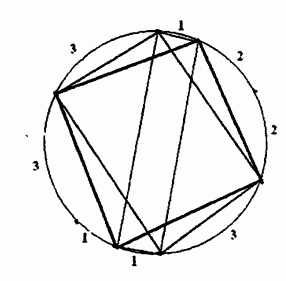

F.A.Qs
Home
Discuss
ProblemSet
Status
Ranklist
Contest
入门OJ
ModifyUser
Xeonacid
Logout
捐赠本站
Notice:
注册本OJ方式请见https://www.lydsy.com/JudgeOnline/wttl/thread.php?tid=5671
Problem 1800. -- [Ahoi2009]fly 飞行棋
1800: [Ahoi2009]fly 飞行棋
Time Limit:
10 Sec
Memory Limit:
64 MB
Submit:
2046
Solved:
1592
[
Submit
][
Status
][
Discuss
]
Description
给出圆周上的若干个点，已知点与点之间的弧长，其值均为正整数，并依圆周顺序排列。 请找出这些点中有没有可以围成矩形的，并希望在最短时间内找出所有不重复矩形。
Input
第一行为正整数N，表示点的个数，接下来N行分别为这N个点所分割的各个圆弧长度
Output
所构成不重复矩形的个数
Sample Input
8
1
2
2
3
1
1
3
3
Sample Output
3
HINT
N<= 20

Source
[
Submit
][
Status
][
Discuss
]
HOME
Back